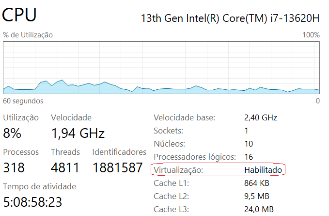

Este codelab descreve como preparar o ambiente de desenvolvimento para aplicações React Native em um sistema operacional Windows 10 ou Windows 11. Ao final, o computador terá instalados: Node.js, Java Development Kit (JDK) 21, o Android SDK via linha de comando e um Emulador Android (AVD). O Visual Studio Code (VS Code) e o Expo CLI são configurados na última seção.
60 a 90 minutos, dependendo da velocidade de conexão e do computador.
Node.js: https://nodejs.org/
JDK 21: https://www.oracle.com/java/technologies/downloads/#java21
Android SDK (command-line tools): https://developer.android.com/studio#command-line-tools-only
React Native – Ambiente nativo: https://reactnative.dev/docs/environment-setup
Expo: https://expo.dev/
Windows 10 (64 bits, versão 1903 ou posterior) ou Windows 11.
A configuração de variáveis de ambiente do sistema exige privilégios de administrador. Verifique com o suporte de TI se o computador tiver restrições.
O emulador Android requer que a virtualização esteja habilitada na BIOS/UEFI do computador. Para verificar:

Reserve pelo menos 8 GB livres. O Android SDK com imagem de sistema ocupa entre 4 GB e 6 GB, e projetos Expo crescem à medida que pacotes são instalados.
Este codelab usa o Prompt de Comando (CMD) do Windows. Os comandos que envolvem variáveis de ambiente usam a sintaxe %VARIAVEL%, que funciona apenas no CMD. No PowerShell, a sintaxe é diferente ($env:VARIAVEL).
O React Native (e o Expo CLI) são distribuídos como pacotes npm. O Node.js fornece o ambiente de execução JavaScript e o gerenciador de pacotes npm, necessários para criar e executar projetos.
Feche e reabra o CMD (para recarregar as variáveis de ambiente). Depois, execute os dois comandos a seguir:
Verificar versão do Node.js e do npm
node -v
npm -vA saída deve exibir dois números de versão, por exemplo:
Exemplo de saída esperada
v22.11.0
10.9.0O emulador Android e as ferramentas de compilação nativa do React Native dependem do Java. A versão recomendada é o JDK 21, que recebe suporte até setembro de 2026 no modelo de suporte de longo prazo (LTS) da Oracle.
Verificar versão do Java
java -version
Exemplo de saída esperada
java version "21.0.x" ...
Java(TM) SE Runtime Environment (build 21.0.x ...)
Java HotSpot(TM) 64-Bit Server VM (build 21.0.x ...)O Android Studio não é necessário para desenvolver com React Native. O SDK pode ser instalado de forma mais leve usando apenas as ferramentas de linha de comando (command-line tools).
C:\Users\<usuario>\AppData\Local\Android\Sdk\ (raiz do SDK) Sdk\ ├ cmdline-tools\latest\ (ferramentas de linha de comando) ├ platforms\ (plataformas Android) ├ build-tools\ (ferramentas de compilação) ├ system-images\ (imagens para o emulador) └ platform-tools\ (adb, fastboot)
Somente ferramentas de linha de comando, baixe o arquivo ZIP para Windows.Criar estrutura de pastas
mkdir C:\Users\%USERNAME%\AppData\Local\Android\Sdk\cmdline-toolsEstrutura esperada após organização
C:\Users\<usuario>\AppData\Local\Android\Sdk\cmdline-tools\latest\A variável ANDROID_HOME aponta para a raiz do Android SDK e é exigida pelas ferramentas do React Native.
Campo | Valor |
Nome da variável | ANDROID_HOME |
Valor da variável | C:\Users\<usuario>\AppData\Local\Android\Sdk |
Adicione os dois caminhos abaixo à variável de sistema PATH para que os comandos sdkmanager, avdmanager e adb fiquem disponíveis no CMD.
Caminhos a adicionar no PATH
%ANDROID_HOME%\cmdline-tools\latest\bin
%ANDROID_HOME%\platform-tools
Execute os comandos abaixo, um de cada vez, no CMD. O sdkmanager fará o download dos componentes necessários.
Instalar plataforma e build-tools
sdkmanager "platforms;android-34" "build-tools;34.0.0"
Instalar imagem de sistema
sdkmanager "system-images;android-34;google_apis;x86_64"
Instalar repositórios
sdkmanager "extras;google;m2repository" "extras;android;m2repository"
Instalar platform-tools
sdkmanager "platform-tools"
Aceitar licenças do Android SDK
sdkmanager --licenses
Digite y e pressione Enter para cada licença exibida.
Listar componentes instalados
sdkmanager --list_installed
A saída deve listar platforms;android-34, build-tools;34.0.0, system-images;android-34;google_apis;x86_64 e platform-tools.
Um AVD é um emulador de dispositivo Android que roda no computador. O React Native usa o AVD para exibir o aplicativo durante o desenvolvimento.
Criar Android Virtual Device
avdmanager create avd -n MeuAVD34 -k "system-images;android-34;google_apis;x86_64" -d "pixel_6"Os parâmetros usados são:
Parâmetro | Descrição |
-n MeuAVD34 | Nome do AVD (pode ser qualquer nome) |
-k ... | Imagem de sistema instalada no passo 5.5 |
-d pixel_6 | Perfil de hardware (Pixel 6) |
Se o avdmanager perguntar se deseja criar um hardware profile personalizado, responda no.
Listar AVDs disponíveis
avdmanager list avd
A saída deve exibir MeuAVD34 na lista.
Inicializar o emulador Android
emulator -avd MeuAVD34
Uma janela com o emulador Android deve abrir em alguns segundos. Se o emulador inicializar e exibir a tela inicial do Android, o ambiente está correto.
O VS Code é o editor de código recomendado para este curso. É gratuito, leve e tem suporte nativo a JavaScript e TypeScript.
Abra o VS Code, vá à aba Extensões (Ctrl + Shift + X) e instale:
Extensão | Finalidade |
ES7+ React/Redux/React-Native snippets | Atalhos de código para React Native |
Prettier – Code formatter | Formatação automática de código |
ESLint | Análise estática de código JavaScript |
GitLens | Integração avançada com Git |
Verificar versão do VS Code
code -v
Criar projeto Expo
npx create-expo-app MeuPrimeiroProjeto --template blank
cd MeuPrimeiroProjetoCertifique-se de que o emulador está rodando (seção 6.3). Depois, execute:
Iniciar o aplicativo no emulador Android
npx expo start --android
O Expo compilará o projeto e instalará o Expo Go no emulador automaticamente. Em seguida, o aplicativo será exibido no emulador.
Execute todos os comandos abaixo no CMD após concluir a configuração. Todos devem retornar versões ou informações sem erros.
Comando | O que verifica | Saída esperada |
node -v | Node.js instalado | v22.x.x ou superior |
npm -v | npm instalado | 10.x.x ou superior |
java -version | JDK instalado | java version 21.x.x |
sdkmanager --list_installed | Componentes do SDK | android-34, build-tools, platform-tools |
avdmanager list avd | AVD criado | MeuAVD34 na lista |
code -v | VS Code instalado | Número de versão |
Sintoma | Causa provável | Solução |
Emulador não executa | Configuração do AVD com problemas | Verifique o arquivo C:\Users\<usuario>\.android\avd\<nome do AVD>\config.ini e busque por Sdk. Se aparecer algo parecido com Sdk/Sdk remova o Sdk duplicado. |
Emulador sem internet | Configuração do DNS do AVD | Execute o emulador com |
Botões da lateral direita não funciona | Configuração do AVD com problemas | Verifique o arquivo C:\Users\<usuario>\.android\avd\<nome do AVD>\config.ini e busque por ‘hw.keyboard'. Se aparecer ‘hw.keyboard=no', altere ‘no' para ‘yes'. |
node ou java não é reconhecido | PATH não atualizado | Feche e reabra o CMD |
sdkmanager: acesso negado | CMD sem privilégios de admin | Execute o CMD como administrador |
Emulador não inicia (HAXM / Hyper-V) | Virtualização desabilitada ou conflito | Habilite VT-x/AMD-V na BIOS; veja a doc de aceleração |
sdkmanager não reconhecido | PATH incorreto | Verifique se %ANDROID_HOME%\cmdline-tools\latest\bin está no PATH |
emulator não reconhecido | platform-tools não está no PATH | Adicione %ANDROID_HOME%\emulator ao PATH |
Expo: sem dispositivo detectado | Emulador não está rodando | Execute emulator -avd MeuAVD34 antes de npx expo start |
Fim do Codelab – Ambiente de Desenvolvimento React Native